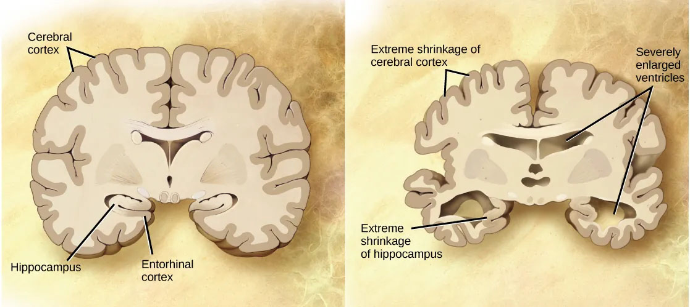
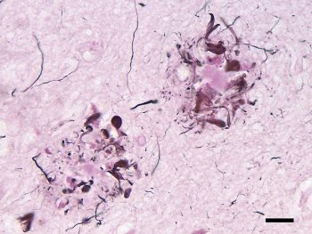
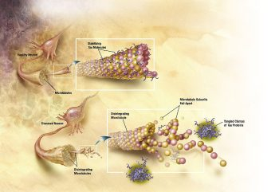

11.6: Alzheimer’s Disease
Dementia describes a group of symptoms associated with a decline in memory, reasoning, or other cognitive skills. Alzheimer’s disease is the most common cause of dementia in the elderly (Clark et al., 2018). In 2023, an estimated 6.7 million Americans are living with Alzheimer’s disease, and costs for their care are estimated at $345 billion. Roughly one in every eight people age 65 or older has the disease. Due to the aging of the baby-boomer generation, there are projected to be as many as 13 million Alzheimer’s patients in the United States in the year 2050.
Symptoms of Alzheimer’s disease include disruptive memory loss, confusion about time or place, difficulty planning or executing tasks, poor judgment, and personality changes. Problems smelling certain scents can also be indicative of Alzheimer’s disease and may serve as an early warning sign. Many of these symptoms are also common in people who are aging normally, so it is the severity and longevity of symptoms that determine whether a person is suffering from Alzheimer’s.
Alzheimer’s disease was named for Alois Alzheimer, a German psychiatrist who published a report in 1911 about a woman with severe dementia symptoms. He examined the woman’s brain following her death and reported the presence of abnormal clumps, which are now called amyloid plaques, along with tangled brain fibers called neurofibrillary tangles. Amyloid plaques, neurofibrillary tangles, and an overall shrinking of brain volume are hallmarks of degeneration in the brains of Alzheimer’s patients. Loss of neurons in the hippocampus is especially severe in advanced Alzheimer’s patients. Figure 10 compares a normal brain to the brain of an Alzheimer’s patient.

Amyloid plaques and neurofibrillary tangles are the two main biological markers associated with Alzheimer’s (The Brain from Top to Bottom, n.d.). Both are buildups of protein that occur as part of the normal aging process, but in people with Alzheimer ’s-type dementias, the amounts of these proteins that build up are far greater.
Amyloid plaques. The beta-amyloid protein involved in Alzheimer’s comes in several different molecular forms that collect between neurons (NIA, 2017). It is formed from the breakdown of a larger protein called amyloid-precursor protein. One form, beta-amyloid 42, is thought to be especially toxic. In the Alzheimer’s brain, abnormal levels of this naturally occurring protein clump together to form plaques that collect between neurons and disrupt cell function. Research is ongoing to understand how and at what stage of the disease the various forms of beta-amyloid influence Alzheimer’s disease symptoms.

Neurofibrillary tangles. Neurofibrillary tangles are abnormal accumulations of a protein called tau that collect inside neurons. Healthy neurons, in part, are supported internally by structures called microtubules, which help guide nutrients and molecules from the cell body to the axon and dendrites. In healthy neurons, tau normally binds to and stabilizes microtubules. In Alzheimer’s disease, however, abnormal chemical changes cause tau to detach from microtubules and stick to other tau molecules, forming threads that eventually join to form tangles inside neurons (Figure 12). These tangles block the neuron’s transport system, harming synaptic communication between neurons.

Emerging evidence suggests that Alzheimer’s-related brain changes may result from a complex interplay among abnormal tau and beta-amyloid proteins and several other factors. It appears that abnormal tau accumulates in specific brain regions involved in memory. Beta-amyloid clumps into plaques between neurons. As the level of beta-amyloid reaches a tipping point, there is a rapid spread of tau throughout the brain (NIA, 2017).
A rare form of early-onset Alzheimer’s disease causes dementia beginning between the ages of 30 and 60; it is usually caused by mutations in one of three known genes (Clark et al., 2018). The more prevalent, late-onset form of the disease also has a genetic component; however research has not identified its genetic contributors as clearly as with the early-onset form of the disease. That said, one particular gene, apolipoprotein E (APOE), has a variant that increases a carrier’s likelihood of getting the disease. One APOE-E4 allele doubles or triples the chance of getting a diagnosis of Alzheimer’s disease. Having two copies increases the risk about eight to twelvefold. Many other genes have been identified that might be involved in the pathology of late-onset Alzheimer’s disease.
Unfortunately, there is no cure for Alzheimer’s disease. Approved treatments focus on managing the symptoms of the disease. Because a decrease in the activity of cholinergic neurons (neurons that use the neurotransmitter acetylcholine) is common in Alzheimer’s disease, several drugs used to treat the disease work by increasing acetylcholine neurotransmission, often by inhibiting the enzyme that breaks down acetylcholine in the synaptic cleft. Many treatments currently in development use humanized monoclonal antibodies from mouse models and aim to clear the bad proteins in human patients. While some clinical trials of compounds have shown clearing of the bad proteins on brain PET scans, serious side effects such as Amyloid-related imaging abnormalities (ARIA) have been detected in brain MRI, and the effects on cognition and daily functioning have been disappointing.
Other clinical interventions focus on behavioral therapies like psychotherapy, sensory therapy, and cognitive exercises. Since Alzheimer’s disease appears to hijack the normal aging process, prevention research is prevalent. Smoking, obesity, and cardiovascular problems may be risk factors for the disease, so treatments for those may also help to prevent Alzheimer’s disease. Studies show that engaging in mentally stimulating activities like puzzles, reading, playing music, and socializing in later life may reduce the risk of developing Alzheimer’s disease.
Text Attribution:
This section contains material adapted from:
Clark, M.A., Douglas, M. & Choi, J. (2023). 35.5 Nervous System Disorders. In Biology 2e. OpenStax. Access for free at https://openstax.org/books/biology-2e/pages/35-5-nervous-system-disorders License: CC BY 4.0 DEED.
National Institute on Aging (NIA) (2017). What Happens to the Brain in Alzheimer’s Disease? https://www.nia.nih.gov/health/what-happens-brain-alzheimers-disease Public Domain
“The Brain from Top to Bottom” (n.d.). Retrieved on June 1, 2023 from https://thebrain.mcgill.ca/
Media Attributions
- Neuritic abeta plaques © Wikimedia is licensed under a CC BY-SA (Attribution ShareAlike) license
- Tangles © Wikimedia is licensed under a CC0 (Creative Commons Zero) license


A build-up of misfolded proteins in the brain that play a central role in Alzheimer’s disease
abnormal accumulations of a protein called tau that collect inside neurons and is a key biological marker in Alzheimer’s disease